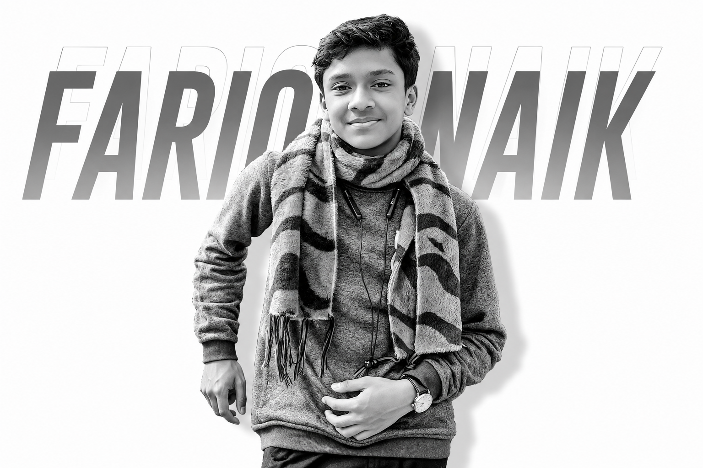
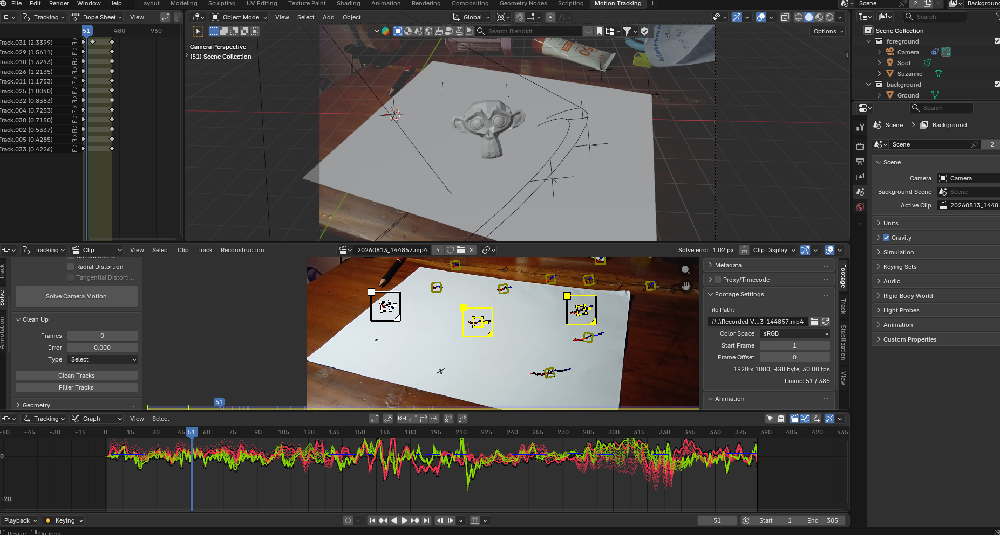
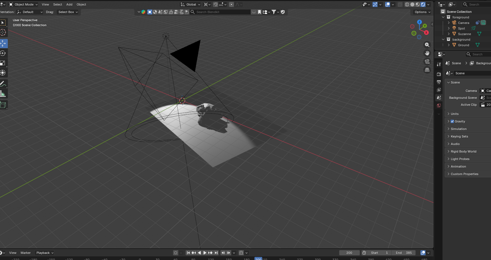
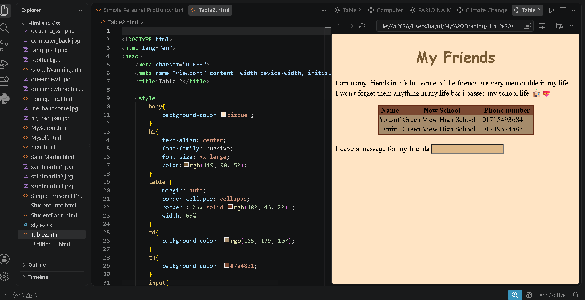
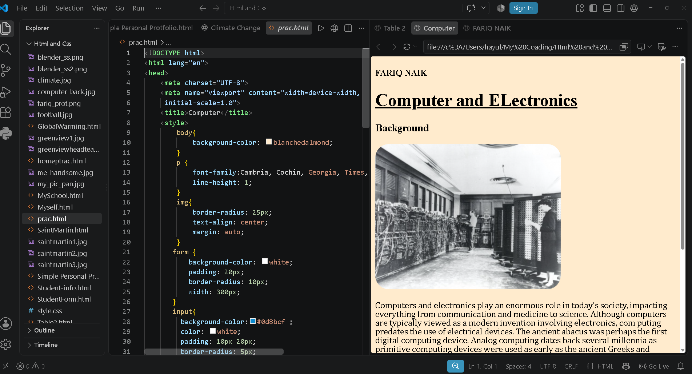
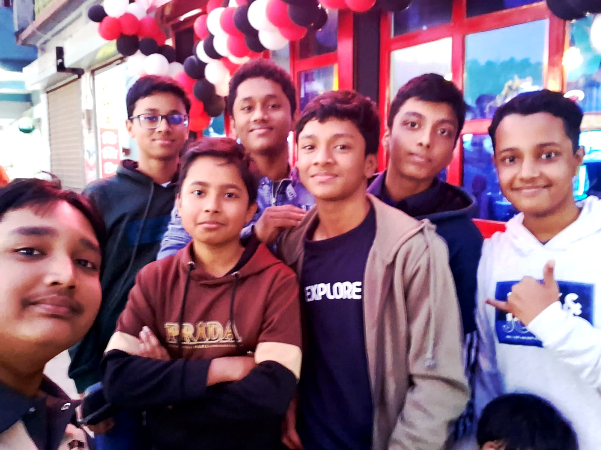
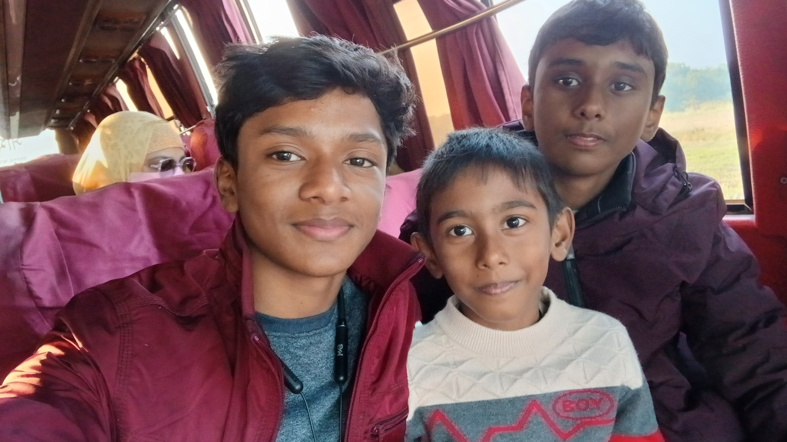
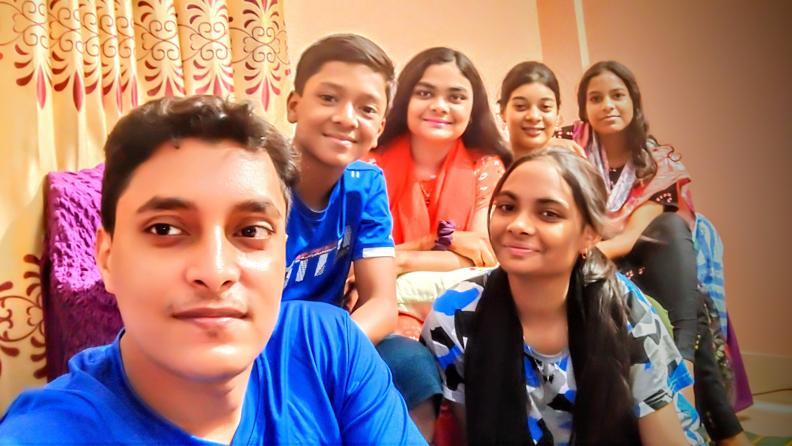

I am a student of class 8 of Green View High School . I think , I am not like all other students . I don't only learn to read books and write in the examination paper .

Football is one of my favorite sports and an important part of my free time. I enjoy playing the game because it helps me stay active, focused, and energetic. I play football every Saturday, and while I consider myself a decent player, I am always trying to improve my skills, teamwork, passing, and overall understanding of the game. For me, football is not only about winning—it is about enjoying the game, learning from every match, and continuously getting better. ⚽
| 3d Modeling | Coading |

3D Modeling is one of my favorite creative hobbies. I enjoy turning simple ideas into detailed 3D objects and experimenting with shapes, materials, lighting, textures, and realistic scenes. It allows me to combine creativity, technology, and imagination while continuously learning new techniques.

I enjoy creating different objects and environments, exploring visual effects, and improving my skills through every project. For me, 3D modeling is more than just a hobby—it is a way to bring ideas from my imagination into a visual world.

Coding is one of my favorite areas of technology, where I enjoy turning ideas into working projects through creativity and problem-solving. I have been learning and working with Python, HTML, and CSS, exploring how code can be used to build useful programs, interactive websites, and creative digital projects.

Python helps me develop my programming and logical- thinking skills, while HTML and CSS allow me to design and structure websites. I enjoy experimenting with new ideas, learning from mistakes, and improving my skills with every project I create. For me, coding is not just about writing code—it is about building something from an idea and continuously learning how to make it better.
I am many friends in life but some of the friends are very memorable in my life . I won't forget them anything in my life bcs i passed my school life 🏫💝
| Name | Now School | Phone number |
|---|---|---|
| Ahnaf | Green View High School | 01739469374 |
| Yousuf | Green View High School | 01715493684 |
| Tamim | Green View High School | 01749374585 |


My cousins are some of the best companions I have, especially during Eid. 🌙 Every Eid, I love bringing everyone together so we can spend quality time as a group and create unforgettable memories.

We stay together at night, play different games 🎮, watch movies 🎬, talk about random things, laugh together 😂, and enjoy every moment of our time together. What makes our group special is the fun, friendship, and connection we share. Eid feels much more exciting when everyone is together, and these moments with my cousins are memories I will always cherish. ❤️
I had too less journeys in my life !


My first-ever beach journey to Cox’s Bazar with my full family was a truly unforgettable experience. 🌊 It was exciting to see the vast sea for the first time and experience the sound of the waves, the fresh breeze, and the beautiful surroundings. We spent time walking along the beach, enjoying the scenery, taking photos 📸, exploring different places, and sharing lots of fun moments together. Being surrounded by my whole family made the journey even more special. We laughed, enjoyed delicious food, watched the sunset 🌅, and created memories that I will always cherish. For me, that trip was not just a vacation—it was a beautiful family adventure that I hope to experience again someday. ❤️